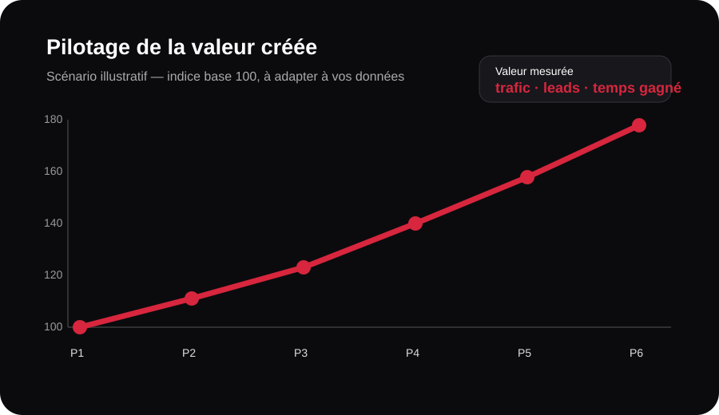

Pourquoi choisir MinoSeo pour transformer vos problèmes de visibilité en leviers de croissance ?
Un site peut être techniquement solide et rester invisible. Une marque peut publier sans créer d’engagement. Une équipe peut aussi perdre des heures sur des tâches répétitives. MinoSeo réunit SEO GEO, autorité, Community Management, data et externalisation pour traiter ces freins avec une méthode lisible et des prestations à prix raisonnables.

Un partenaire unique pour gagner en visibilité et libérer vos équipes
Notre point de départ n’est pas une liste d’actions standardisées : c’est votre problème. Manque de trafic qualifié, faible présence dans les réponses IA, autorité insuffisante, animation irrégulière des réseaux sociaux, données difficiles à exploiter ou surcharge opérationnelle : chaque situation demande des priorités différentes. Notre rôle consiste à identifier les leviers utiles, à expliquer leur logique et à suivre les indicateurs qui comptent réellement.
SEO & GEO : passer d’un site présent à un site réellement visible
Quand les pages ne répondent pas clairement aux intentions de recherche, le SEO plafonne. Nous travaillons l’architecture, la technique, les contenus, le maillage et les signaux de confiance. L’optimisation est priorisée selon l’impact attendu et la faisabilité, plutôt que selon une checklist générique.
Le GEO complète cette démarche : structure des réponses, clarté des entités, preuves, cohérence de marque et contenus facilement interprétables par les moteurs génératifs. Nous intégrons aussi les principes d’Answer Engine Optimization (AEO). L’objectif du référenceur SEO et du référenceur GEO est le même : rendre votre expertise accessible au bon moment, dans le bon environnement de recherche.
Exemple de tableau de pilotage
Indices illustratifs sur 100. Ils montrent comment une mission peut être pilotée ; ils ne constituent pas une promesse de performance.
Autorité : qualité avant volume
Exemple de scoring interne pour comparer des opportunités de liens avant validation.
Netlinking efficace : obtenir des liens qui ont une vraie logique éditoriale
Un bon backlink ne se résume pas à une métrique. Nous privilégions la cohérence thématique, la qualité du site, la page de destination et la naturalité de l’ancre. Une campagne peut associer Guest Blogging et présence dans un annuaire pertinent, sans rechercher artificiellement le volume.
Pour les annuaires, chaque opportunité est examinée avant soumission. Un annuaire de référencement doit apporter un contexte cohérent. Cette logique de Netliking vise à construire un profil de liens plus crédible et plus durable, avec un coût défini selon le volume et le niveau de sélection demandé.
Community Management : publier avec régularité et avec un objectif
Être présent sur les réseaux sociaux sans ligne éditoriale mobilise du temps pour peu de résultats. Nous structurons les thèmes, le calendrier, les formats et les appels à l’action selon votre audience. Le Community Management devient ainsi un levier de visibilité, de réassurance et de trafic, plutôt qu’une simple obligation de publication.
Le suivi peut intégrer portée, interactions, clics, demandes entrantes et contenus les plus performants. Cela permet d’ajuster la production et d’investir davantage dans les formats qui créent réellement de la valeur.
Lecture d’un cycle éditorial
Données fictives d’illustration. Les KPI réels dépendent du réseau, de l’audience, du secteur et de la fréquence de publication.
Ce que la qualité des données change
| Problème | Réponse | Bénéfice |
|---|---|---|
| Données dispersées | Centralisation | Lecture plus rapide |
| Erreurs de saisie | Contrôles qualité | Moins de reprises |
| Backlog | Capacité externalisée | Délais maîtrisés |
Saisie de données : transformer les tâches répétitives en processus contrôlé
Une saisie de données mal structurée génère des erreurs, des doublons et des reprises coûteuses. Nous cadrons les règles, les formats, les contrôles et les volumes afin de produire une donnée plus propre et directement exploitable par vos équipes.
Externaliser permet aussi de préserver les ressources internes pour les missions à plus forte valeur. Le tarif est construit selon la complexité, le volume, les contrôles attendus et la fréquence, afin de conserver une prestation proportionnée au besoin.
BPO : libérer du temps sans perdre le contrôle
Le BPO est pertinent lorsque des tâches répétitives ou chronophages ralentissent les équipes : traitement de données, opérations back-office, qualification, mise à jour de contenus ou autres processus cadrables. Nous définissons le périmètre, les consignes, les contrôles et le reporting avant montée en charge.
Le gain ne se mesure pas seulement en coût horaire. Il faut comparer le temps interne récupéré, la capacité supplémentaire, la réduction des retards et la possibilité de recentrer les collaborateurs sur les activités à plus forte valeur.
Le bon calcul : coût évité + capacité créée
ROI indicatif = (valeur des gains − coût de la prestation) ÷ coût de la prestation × 100.
La « valeur des gains » peut inclure les heures internes libérées, la marge issue de nouveaux leads, les coûts de reprise évités ou la capacité de production supplémentaire.
Cette formule sert au pilotage. Elle doit être alimentée par vos données réelles.
Mesurer le ROI sans inventer de promesses

Le graphique est une simulation pédagogique en indice base 100. Il illustre une méthode de suivi et non des résultats clients garantis.
Chez MinoSeo, un prix raisonnable signifie d’abord un périmètre utile : éviter les actions décoratives, concentrer le budget sur les priorités et rendre les livrables compréhensibles. Pour le référencement, le retour peut être suivi via les clics qualifiés, leads, conversions et progression des pages stratégiques. Pour le social, via l’engagement et les actions générées. Pour la data et l’externalisation, via le temps économisé, la qualité et la capacité produite.
| Prestation | Indicateurs utiles |
|---|---|
| SEO / GEO | Visibilité, clics, leads, conversions, présence IA observée |
| Netlinking | Qualité des domaines, pages renforcées, évolution organique |
| Community Management | Portée, engagement, clics, demandes |
| Data / BPO | Volume, qualité, délais, heures internes libérées |
Vous avez un problème de visibilité ou de charge opérationnelle ?
Présentez-nous votre situation. Nous vous aidons à distinguer les actions prioritaires, les indicateurs à suivre et le périmètre adapté à votre budget.